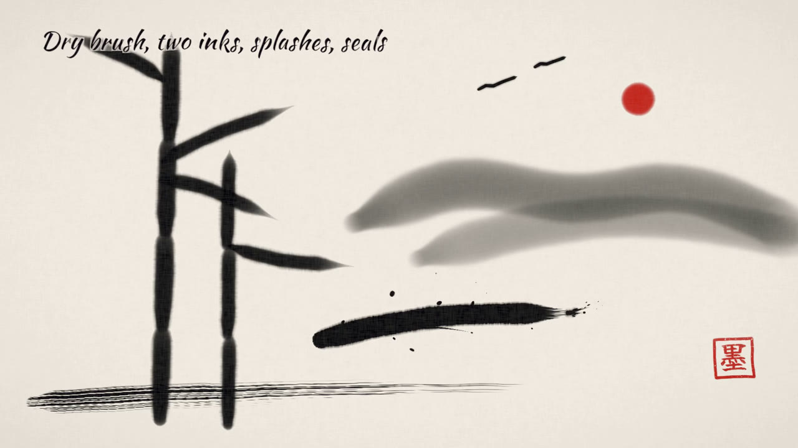

One minute, recorded in Unity 6 with the music from my game.
Two halves, one paper
The look and the canvas share the same paper colour and grain, so ink you paint sits naturally in the shaded world.

The look
- Three flat ink tones with brushy borders, and mist that fades far objects into the paper
- Full-screen outlines with brush pressure, line wobble, dry-brush breakup and edge wash
- Screen moments from code: ink bleeding in, dissolve to paper, paper flash, ink negative
- Brush strokes in the world, and a painted scene transition
The live canvas
- GPU wet-ink simulation: ink spreads along the paper fibres, then dries
- Five brushes: bold, wet wash, dry brush, fine line and splash
- Splashes, hanko seals, and a vermilion ink that mixes with black
- Record strokes and replay them anywhere, at any size and speed
Ink as game effects
Every effect is a canvas with see-through paper, laid over the screen or onto a floor or wall. Scroll sideways.

Needs
Unity 6 (6000.0 or newer) with URP 17. Built-in and HDRP are not supported.
Costs
The look is one full-screen pass. A canvas is free while dry and a few GPU passes a frame while wet.
Comes with
Two demo scenes, two stroke recordings, two seals, a setup menu and offline docs.
Coming to the Asset Store
InkLook is almost ready for the Unity Asset Store. Until then, the docs show everything it does, and I answer questions by email.